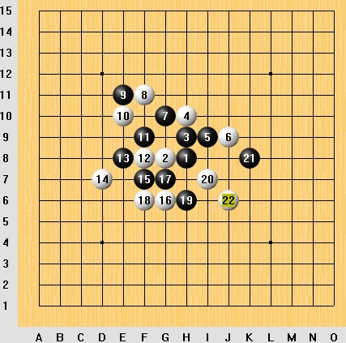

黑先胜
#1 黑先胜 作者：飞翔 发表时间：2006-3-19 9:18:34
#2 Re:黑先胜 作者：飞翔 发表时间：2006-3-19 9:26:47
答案[hf][/hf]
#3 Re:黑先胜 作者：初学者451 发表时间：2006-3-24 19:11:44
想出一个办法黑子先后放在H5,J7,I8,I12,I11,J10,L8位#4 Re:黑先胜 作者：基因 发表时间：2006-3-25 0:37:06
123#5 Re:黑先胜 作者：o8sang 发表时间：2006-3-25 20:12:26
33333333333333333#6 Re:黑先胜 作者：wangbi 发表时间：2006-4-4 22:05:48
怎么走#7 Re:黑先胜 作者：无声无息 发表时间：2006-4-5 19:06:10
看看
#8 Re:黑先胜 作者：无声无息 发表时间：2006-4-5 19:06:39
怎么看不到图片？#9 Re:黑先胜 作者：qq4114 发表时间：2006-4-6 10:03:12
学习一下#10 Re:黑先胜 作者：阿德 发表时间：2006-4-15 19:32:41
学习一下#11 Re:黑先胜 作者：lin85 发表时间：2006-4-17 19:09:22
这样格式的不能试啊#12 Re:Re:黑先胜 作者：蚯蚓降龙 发表时间：2006-9-1 21:23:55

#13 Re:黑先胜 作者：zzp197 发表时间：2006-9-3 9:07:48
学习#14 Re:黑先胜 作者：hsc931 发表时间：2006-9-3 15:48:21
先睹为快#15 Re:黑先胜 作者：ベ☆ve寶々 发表时间：2006-9-3 22:15:16
想出一个办法黑子先后放在H5,J7,I8,I12,I11,J10,L8位 (1楼的)#16 Re:Re:黑先胜 作者：检查用户名 发表时间：2006-9-4 8:55:38
让我瞅瞅怎么走？：）#17 Re:Re:黑先胜 作者：检查用户名 发表时间：2006-9-4 9:11:37
我有些晕，白棋在走f8时，黑棋不就可以以四三取胜了吗？#18 Re:黑先胜 作者：天涯游子 发表时间：2006-9-22 15:43:13
答案:
黑棋:J7,I8,L8,J10,I12,I11冲四活三成功.
#19 Re:黑先胜 作者：dazhi 发表时间：2006-10-4 9:47:36
学习一下#20 Re:黑先胜 作者：书海泛舟 发表时间：2006-10-4 12:17:03
J7 K10 L9杀了#21 Re:黑先胜 作者：好累 发表时间：2006-10-5 16:21:01
看看#22 Re:黑先胜 作者：特磨道 发表时间：2006-10-9 8:10:29
看一看，学一学！#23 Re:黑先胜 作者：ntren 发表时间：2006-10-10 14:20:22

#24 Re:黑先胜 作者：浪影 发表时间：2006-10-11 22:35:32
dgsdg#25 Re:黑先胜 作者：RAFEK 发表时间：2006-10-13 12:58:09
rafek#26 Re:黑先胜 作者：xzlht 发表时间：2006-10-14 10:55:23
as#27 Re:黑先胜 作者：学者 发表时间：2006-10-15 14:40:08
先I12点冲四,再在J7点叫杀,若防于H7,则I8-L8-I11-J10四三胜.
若防I8点,则H7-L9-K10-K11四三胜.
#28 Re:黑先胜 作者：学者 发表时间：2006-10-15 14:43:32
若防K10点,则I8-H5四三胜.
#29 Re:黑先胜 作者：学者 发表时间：2006-10-15 14:56:23
若防H5,则I8-L8-J10-I11四三胜.
若防I6,L9,与上同四三胜.
#30 Re:黑先胜 作者：学者 发表时间：2006-10-15 15:00:20
Re:初学者451
H5后,白H7已经活三不能走J7.
#31 Re:黑先胜 作者：kfbgp 发表时间：2006-10-15 19:32:42
还看不出来
#32 Re:黑先胜 作者：默默无闻 发表时间：2006-10-15 21:21:45
学习
#33 Re:黑先胜 作者：阳光灿烂 发表时间：2006-10-17 19:12:36
顶了再说
#34 Re:黑先胜 作者：星尘 发表时间：2006-10-18 11:18:37
I11、L8即可